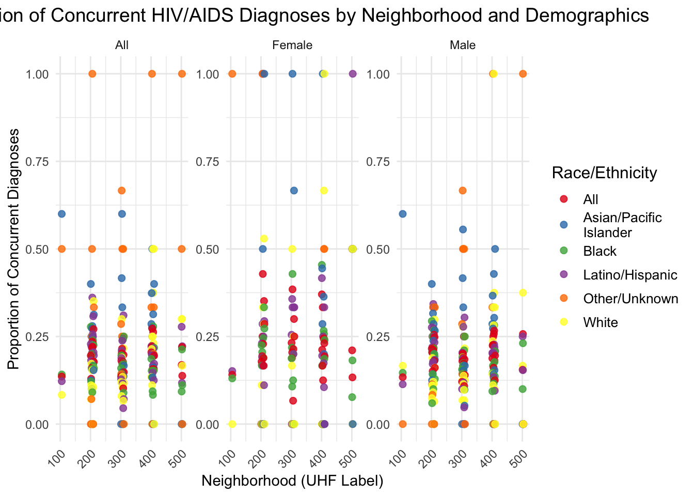
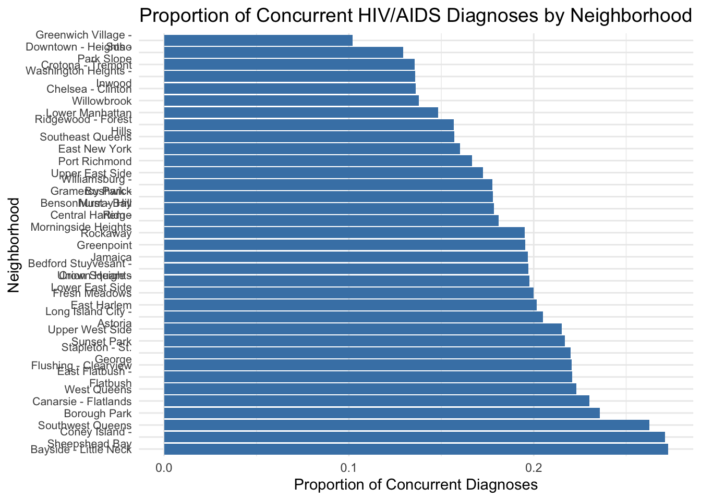

# load the package
library(dplyr)
library(ggplot2)
library(sf)## Linking to GEOS 3.11.0, GDAL 3.5.3, PROJ 9.1.0; sf_use_s2() is TRUElibrary(RColorBrewer)
# import dataset
Merged_HIV_UHF_Data <- read.csv("Merged_HIV_UHF_Data.csv")# create summary data for concurrent HIV/AIDS diagnosis
summary_data <- Merged_HIV_UHF_Data %>%
group_by(uhf_label, sex, race_ethnicity) %>%
summarize(
total_concurrent_hiv_aids = sum(total_number_of_concurrent_hiv_aids_diagnoses, na.rm = TRUE),
total_hiv_diagnoses = sum(total_number_of_hiv_diagnoses, na.rm = TRUE),
proportion_concurrent = total_concurrent_hiv_aids / total_hiv_diagnoses
) %>%
arrange(desc(proportion_concurrent))## `summarise()` has grouped output by 'uhf_label', 'sex'. You
## can override using the `.groups` argument.# Fit the linear regression model
lm_model <- lm(proportion_concurrent ~ uhf_label + sex + race_ethnicity, data = summary_data)
# Summary of the linear regression model
summary(lm_model)##
## Call:
## lm(formula = proportion_concurrent ~ uhf_label + sex + race_ethnicity,
## data = summary_data)
##
## Residuals:
## Min 1Q Median 3Q Max
## -0.31457 -0.08388 -0.00526 0.05930 0.82539
##
## Coefficients:
## Estimate Std. Error t value Pr(>|t|)
## (Intercept) 1.624e-01 3.208e-02 5.063 5.61e-07
## uhf_label 9.565e-05 7.643e-05 1.251 0.211331
## sexFemale 1.650e-02 1.968e-02 0.838 0.402166
## sexMale -9.755e-03 1.850e-02 -0.527 0.598212
## race_ethnicityAsian/Pacific\nIslander 3.167e-02 2.668e-02 1.187 0.235766
## race_ethnicityBlack -2.906e-02 2.578e-02 -1.127 0.260163
## race_ethnicityLatino/Hispanic 7.971e-03 2.565e-02 0.311 0.756116
## race_ethnicityOther/Unknown 1.040e-01 2.967e-02 3.506 0.000491
## race_ethnicityWhite -1.689e-02 2.605e-02 -0.648 0.516952
##
## (Intercept) ***
## uhf_label
## sexFemale
## sexMale
## race_ethnicityAsian/Pacific\nIslander
## race_ethnicityBlack
## race_ethnicityLatino/Hispanic
## race_ethnicityOther/Unknown ***
## race_ethnicityWhite
## ---
## Signif. codes: 0 '***' 0.001 '**' 0.01 '*' 0.05 '.' 0.1 ' ' 1
##
## Residual standard error: 0.1859 on 558 degrees of freedom
## (63 observations deleted due to missingness)
## Multiple R-squared: 0.04472, Adjusted R-squared: 0.03102
## F-statistic: 3.265 on 8 and 558 DF, p-value: 0.001198coeff_table <- summary(lm_model)$coefficients
coeff_table <- as.data.frame(coeff_table)
colnames(coeff_table) <- c("Estimate", "Std. Error", "t value", "Pr(>|t|)")
# Add significance levels
coeff_table$Significance <- cut(coeff_table$`Pr(>|t|)`,
breaks = c(-Inf, 0.001, 0.01, 0.05, 0.1, Inf),
labels = c("***", "**", "*", ".", " "))
# View the coefficient table
print(coeff_table)## Estimate Std. Error t value
## (Intercept) 1.624272e-01 3.207920e-02 5.0633198
## uhf_label 9.564643e-05 7.643449e-05 1.2513516
## sexFemale 1.649985e-02 1.968022e-02 0.8383979
## sexMale -9.754848e-03 1.850047e-02 -0.5272756
## race_ethnicityAsian/Pacific\nIslander 3.166751e-02 2.668053e-02 1.1869146
## race_ethnicityBlack -2.905533e-02 2.577765e-02 -1.1271521
## race_ethnicityLatino/Hispanic 7.971156e-03 2.565235e-02 0.3107379
## race_ethnicityOther/Unknown 1.040319e-01 2.967142e-02 3.5061315
## race_ethnicityWhite -1.689113e-02 2.604795e-02 -0.6484631
## Pr(>|t|) Significance
## (Intercept) 5.605625e-07 ***
## uhf_label 2.113306e-01
## sexFemale 4.021663e-01
## sexMale 5.982118e-01
## race_ethnicityAsian/Pacific\nIslander 2.357664e-01
## race_ethnicityBlack 2.601627e-01
## race_ethnicityLatino/Hispanic 7.561159e-01
## race_ethnicityOther/Unknown 4.912382e-04 ***
## race_ethnicityWhite 5.169522e-01ggplot(summary_data, aes(x = uhf_label, y = proportion_concurrent, color = race_ethnicity)) +
geom_point(size = 2, alpha = 0.8) + # Keep points for visibility
facet_wrap(~ sex, scales = "free_y") + # Separate panels for each sex
labs(
title = "Proportion of Concurrent HIV/AIDS Diagnoses by Neighborhood and Demographics",
x = "Neighborhood (UHF Label)",
y = "Proportion of Concurrent Diagnoses",
color = "Race/Ethnicity"
) +
theme_minimal() +
theme(
axis.text.x = element_text(angle = 45, hjust = 1),
plot.title = element_text(hjust = 0.5, size = 14),
legend.title = element_text(size = 12),
legend.text = element_text(size = 10)
) +
scale_color_brewer(palette = "Set1")## Warning: Removed 63 rows containing missing values or values outside
## the scale range (`geom_point()`).
# neighborhood
neighborhood_summary <- Merged_HIV_UHF_Data %>%
group_by(neighborhood_u_h_f) %>%
summarize(
total_concurrent_hiv_aids = sum(total_number_of_concurrent_hiv_aids_diagnoses, na.rm = TRUE),
total_hiv_diagnoses = sum(total_number_of_hiv_diagnoses, na.rm = TRUE),
proportion_concurrent = total_concurrent_hiv_aids / total_hiv_diagnoses
) %>%
arrange(desc(proportion_concurrent))
print(neighborhood_summary)## # A tibble: 35 × 4
## neighborhood_u_h_f total_concurrent_hiv_a…¹ total_hiv_diagnoses
## <chr> <int> <int>
## 1 "Bayside - Little Neck" 12 44
## 2 "Coney Island -\nSheepshead Bay" 180 664
## 3 "Southwest Queens" 272 1036
## 4 "Borough Park" 116 492
## 5 "Canarsie - Flatlands" 220 956
## 6 "West Queens" 612 2744
## 7 "East Flatbush -\nFlatbush" 512 2320
## 8 "Flushing - Clearview" 112 508
## 9 "Stapleton - St.\nGeorge" 88 400
## 10 "Sunset Park" 92 424
## # ℹ 25 more rows
## # ℹ abbreviated name: ¹total_concurrent_hiv_aids
## # ℹ 1 more variable: proportion_concurrent <dbl>ggplot(neighborhood_summary, aes(x = reorder(neighborhood_u_h_f, -proportion_concurrent), y = proportion_concurrent)) +
geom_bar(stat = "identity", fill = "steelblue") +
coord_flip() +
labs(
title = "Proportion of Concurrent HIV/AIDS Diagnoses by Neighborhood",
x = "Neighborhood",
y = "Proportion of Concurrent Diagnoses"
) +
theme_minimal() +
theme(
axis.text.y = element_text(size = 8),
plot.title = element_text(hjust = 0.5, size = 14)
)